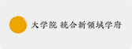

入寮手続きなどに関するお問い合わせは芸術工学部 学務課 学生係まで。
寮生活などに関するお問い合わせは井尻寮まで。
|
九州大学井尻寮 Facebookページ https://www.facebook.com/ijiriryo |
井尻寮のFacebookページです。寮生大会での決定事項やイベントのアルバムなど、比較的頻繁に更新される情報はこちらに記載しています。寮生に対して重要なお知らせを行うこともありますので、寮生は定期的に確認するようにしてください。
|
九州大学「学生寄宿舎紹介ページ」 http://www.kyushu-u.ac.jp/student/facilities/kisyukusya.php |
九州大学公式ページの学生寄宿舎総合ページです。井尻寮や松原寮のほか、女子寮の貝塚寮や伊都キャンパス学生寄宿舎ドミトリーなどが紹介されています。学生寄宿舎でお悩みの方はまずこちらをご覧ください。

|
九州大学 松原寮 http://matsuryo.info/main/ |
松原寮も井尻寮同様九州大学が保有する学生寮で、箱崎キャンパスから徒歩10分程度の場所にあります。九州大学の男子学生であればどの学部・学府であっても入寮することができます。
|
九州大学 芸術工学部・芸術工学府 http://www.design.kyushu-u.ac.jp/ |
大橋地区にある九州大学芸術工学部・大学大学院芸術工学府・大学院芸術工学研究院（元九州芸術工科大学）の公式ページです。
|
九州大学 総合理工学府 http://www.tj.kyushu-u.ac.jp/ |
筑紫地区にある九州大学大学院総合理工学府の公式ページです。
|  |
九州大学 統合新領域学府 http://www.ifs.kyushu-u.ac.jp/ |
九州大学大学院統合新領域学府の公式ページです。同学府に所属する者のうち井尻寮に入寮することができるのは、大橋地区に在学するユーザー感性学専攻の学生および筑紫地区に在学するオートモーティブサイエンス専攻の学生です。
現在、特設項目はありません。